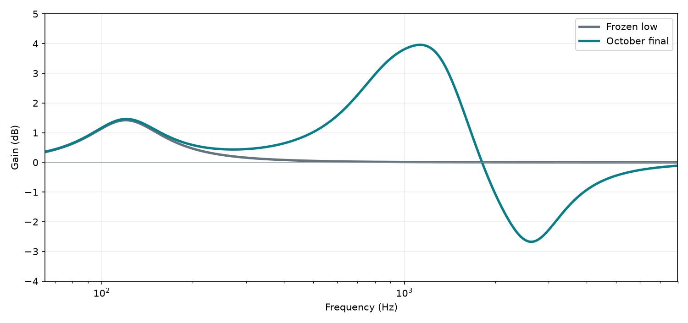

2026-10-02 / IPHONE → KM184
10월 녹음용 보정 필터를
선택했습니다
10월 자료에서 반복되는 넓은 음색 차이를 줄이는 5단 IIR입니다. 9월 자료와 새 녹음은 이 필터의 선택에 쓰지 않았습니다.
결정 · 넓은 중역 후보 유지
개방현 세 창의 800Hz·1kHz 부스트를 낮춘 보수적 후보를 한 개 비교했습니다. 해당 세 창의 악화는 줄었지만 0.5dB 초과 악화 창 수는 여전히 3개였고, 주법별 평균 목표 대역 오차는 3.814→4.075dB로 늘었습니다. 따라서 원래 넓은 중역 응답을 10월용으로 선택했습니다. 개방현의 일부 음에는 저역 단독 보정이 더 맞을 수 있음을 적용 한계로 남깁니다.
주법을 선택해 듣고 보기
왼쪽 목록에서 주법을 고르면 같은 5초 구간의 기준·보정 전·보정 후 재생 버튼과 스펙트로그램이 오른쪽에 나타납니다. 각 주법에서 유효한 창 중 보정 효과가 중앙값에 가장 가까운 창을 대표 예시로 골랐습니다. 세 그림은 같은 색 범위를 사용합니다.
iPhone 보정 전
iPhone 최종 필터
비교용 iPhone 원본과 보정본에는 동일한 기준 레벨을 적용하고, 세 파일에 공통 피크 안전 배율을 썼습니다. 따라서 이 클립은 전체 배포 WAV의 −2.5dB 출력 감쇠를 재현하는 파일이 아니라 음색 비교용입니다. 목록의 한 예시가 주법 전체 점수를 대표하지는 않습니다. 특히 개방현 318·503·583초의 악화 창은 아래 실패 표를 참고하세요.
선택 필터의 실제 주파수 응답

120Hz 저역 한 단 위에 900·1300·1900·2600Hz peaking EQ 네 단을 연결했습니다. 설계 이득은 각각 +2.14 / +3.40 / −1.13 / −2.96dB이며, Q는 1.15 / 1.30 / 1.35 / 1.45입니다. 이는 목표 곡선을 근사한 실제 인과 IIR의 응답입니다.
동일한 10월 평가창 비교
151개 5초 창, 같은 대역 마스크와 레벨 기준, 800–2540Hz의 1/6옥타브 대역 오차입니다. 새 필터는 각 주법을 제외하고 재설계한 결과를 해당 주법에 적용했습니다. 전체 녹음에 쓰는 동결 계수는 11주법 전체로 맞췄습니다. 마지막 곡은 같은 세션에서 이미 탐색에 노출되어 독립 테스트가 아닙니다.
| 후보 | 주법별 평균 오차 | 창 p90 | 저역만 대비 >0.5dB 악화 | 마지막 곡 |
|---|---|---|---|---|
| 저역 한 단 | 5.490 | 7.846 | 0/151 | 5.981 |
| 기존 중역 | 4.424 | 7.155 | 3/151 | 4.578 |
| 선택한 넓은 중역 | 3.814 | 6.685 | 3/151 | 3.720 |
| 보수적 비교 후보 | 4.075 | 6.604 | 3/151 | 4.226 |
수치는 전체 음질 점수가 아니라 목표 대역 음색 오차(dB)입니다. 절대 음량, 공간감, 배음 전체를 대표하지 않습니다.
주법별 효과
| 주법 | 저역만 | 선택 필터 | 오차 감소 |
|---|---|---|---|
| arpeggio | 5.92 | 3.84 | +2.08 |
| complex | 4.56 | 3.34 | +1.22 |
| dynamics | 6.96 | 5.60 | +1.35 |
| glissando | 4.81 | 3.41 | +1.39 |
| open_notes | 6.12 | 5.33 | +0.79 |
| percussion | 5.18 | 3.54 | +1.64 |
| rasgueado | 5.53 | 3.73 | +1.80 |
| scale | 5.81 | 3.93 | +1.88 |
| slur | 5.69 | 3.86 | +1.83 |
| strum | 5.21 | 3.02 | +2.20 |
| tremolo | 4.60 | 2.35 | +2.25 |
개방현 실패 세 창
이 구간들은 이미 상대적으로 강한 800Hz 또는 1008Hz를 더 올린 사례입니다. 5초 창에는 여러 음이 섞일 수 있습니다. 보수적 후보도 세 창 모두 완전히 해결하지는 못했습니다.
| KM184 시각 | 저역만 | 선택 필터 | 보수적 후보 |
|---|---|---|---|
| 318초 | 4.00 | 6.79 | 6.04 |
| 503초 | 2.77 | 4.63 | 3.88 |
| 583초 | 3.06 | 6.84 | 5.89 |
악구 묶음을 바꾼 내부 안정성
주법을 세 묶음으로 나누고 한 묶음씩 설계에서 제외한 뒤 그 묶음에 적용했습니다. 세 경우 모두 저역 단독보다 오차가 줄었고, 응답의 800–2540Hz 차이 p90은 0.06–0.32dB였습니다. 같은 10월 세션 안의 내부 점검이며 다른 세션 재현성은 증명하지 않습니다.
| 설계에서 뺀 주법 묶음 | 창 | 오차 감소 | 전체 응답과의 차이 p90 |
|---|---|---|---|
| arpeggio, strum, open_notes, scale | 72 | +1.49 | 0.32 |
| dynamics, slur, percussion | 44 | +1.59 | 0.06 |
| glissando, tremolo, rasgueado, complex | 35 | +1.53 | 0.13 |
출력 여유와 실제 적용 파일
출력 감쇠를 −2.5dB로 고정했습니다. 32분 15.6초 전체를 필터 상태를 유지하며 처리한 결과, 출력 WAV의 샘플 피크는 −3.155dBFS였습니다. 감쇠 전 4배 오버샘플 근사 피크 −0.649dBFS에서 계산한 감쇠 후 피크는 약 −3.149dBFS입니다. 표준 true-peak 미터 측정값은 아닙니다. 48kHz 모노 24비트 파일이며, 원본 iPhone 모노 캐시에서 생성했습니다.
적용 범위
현재 결과는 10월 2일의 이 iPhone–KM184 배치에 대한 것입니다. 위치·거리·iPhone 녹음 처리 설정이 달라지면 같은 중역 보정이 맞는다고 단정할 수 없습니다. 9월 쌍의 비교는 마지막 참고 점검으로 남겨 두며, 10월 필터의 계수 선택에는 반영하지 않았습니다. 실제 앱의 입출력 지연과 켜기/끄기 전환은 아직 측정하지 않았습니다.